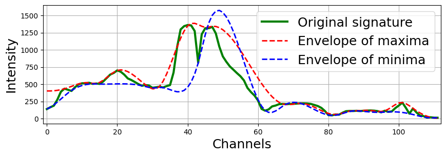

Разложение на эмпирические моды (EMD)
Разложение на эмпирические моды — это метод обработки сигналов, используемый для разложения сигнала на набор собственных мод (IMFs), которые представляют собой осцилляторные компоненты. Метод итеративно выявляет локальные экстремумы, строит верхние и нижние огибающие с использованием сплайн-интерполяции и вычисляет локальное среднее для извлечения IMFs. Существенным недостатком EMD является точность определения локального среднего и огибающих, особенно вблизи границ данных, где выход за границы может привести к искажениям. Эти пограничные проблемы и зависимость от сплайн-интерполяции могут вызвать неточности в извлеченных модах.
{kind=link}
{kind=link}
Алгоритм разложения SWEMD, адаптированный для анализа гиперспектральных изображений, включает несколько обновлений по сравнению с классическим подходом:
Точное вычисление локального среднего с использованием скользящего среднего окна, а не арифметического среднего значений максимума и минимума огибающих сигнала.
Введение правила для вычисления локального среднего, когда окно выходит за пределы диапазона спектральных каналов.
Гибкость в адаптации размера окна к меньшим масштабам, чем расстояние между соседними нулевыми пересечениями в текущей эмпирической моде (EM) или начальная ширина окна.
Подавление шума в эмпирических модах путем увеличения начального размера окна и его многократного применения.

Methods for decomposition into EMD
- hsip.swemd.swemd.SWEMD(data: ndarray, number_of_modes: int = 4, windows_size: list = [3], verbose: bool = True)[исходный код]
Рассчитывает и возвращает IMF и окна для каждого каждого сигнала, указанного в data.
Параметры
- xnp.ndarray
Массив размерности 3 (height * width * bands), размерности 2 (n_samples * bands), или просто один образец.
- number_of_modesint, по умолчанию=4
Количество IMF, которые необходимо вычислить для входного сигнала.
- windows_sizelist или tuple of int, по умолчанию=3
Размер окон для каждой моды, начиная с первой. Если передан список, то каждый элемент указывает размер окна для соответствующего IMF. Если список переданных размеров меньше, чем указано в number_of_modes, то последующие размеры скользящих окон будут вычислены автоматически. Если в списке указан элемент со значением -1, то размер этого окна будет также вычислен автоматически. Если передано целое число, это будет размер скользящего окна только для первого IMF.
Возвращает
- IMFslist
Эмпирические моды для каждого образца.
- err_windows_sizelist
Размеры окон для каждого уровня эмпирических мод.
Примеры
Вычисление EMD: длины окон равны трем для 1-ой и 2-ой моды, 5 для 3-ий моды и автоматически для остальных.
>>> import numpy as np >>> from hsip.swemd.swemd import SWEMD >>> data = np.random.rand(1000, 1000, 100) * 10 # Пример спектральных данных >>> IMFs, windows = SWEMD(data, number_of_modes=8, windows_size=[3, 3, 5]) >>> print(IMFs.shape, windows.shape) (8, 1000, 1000, 100), (8, 1000, 1000)
- hsip.swemd.swemd.SWEMD_signal(iSample: ndarray, number_of_modes: int = 4, windows_size: list = [3])[исходный код]
Возвращает IMF для одномерного образца.
Параметры
- xnp.ndarray
Одномерный сигнал.
- number_of_modesint, по умолчанию=4
Количество IMF, которые необходимо вычислить для входного сигнала.
- windows_sizelist или tuple of int, по умолчанию=3
Размер окон для каждой моды, начиная с первой. Если передан список, то каждый элемент указывает размер окна для соответствующего IMF. Если список переданных размеров меньше, чем указано в number_of_modes, то последующие размеры скользящих окон будут вычислены автоматически. Если в списке указан элемент со значением -1, то размер этого окна будет также вычислен автоматически. Если передано целое число, это будет размер скользящего окна только для первого IMF.
Возвращает
- IMFslist
Эмпирические моды для каждого образца.
- err_windows_sizelist
Размеры окон для каждого уровня эмпирических мод.
Примеры
Вычисление EMD: длины окон равны трем для 1-ой и 2-ой моды, 5 для 3-ий моды и автоматически для остальных.
>>> import numpy as np >>> from hsip.swemd.swemd import SWEMD_signal >>> data = np.random.rand(100) * 10 # Пример спектральных данных >>> IMFs, windows = SWEMD(data, number_of_modes=8, windows_size=[3, 3, 5]) >>> print(IMFs.shape, windows.shape) (100), (8)